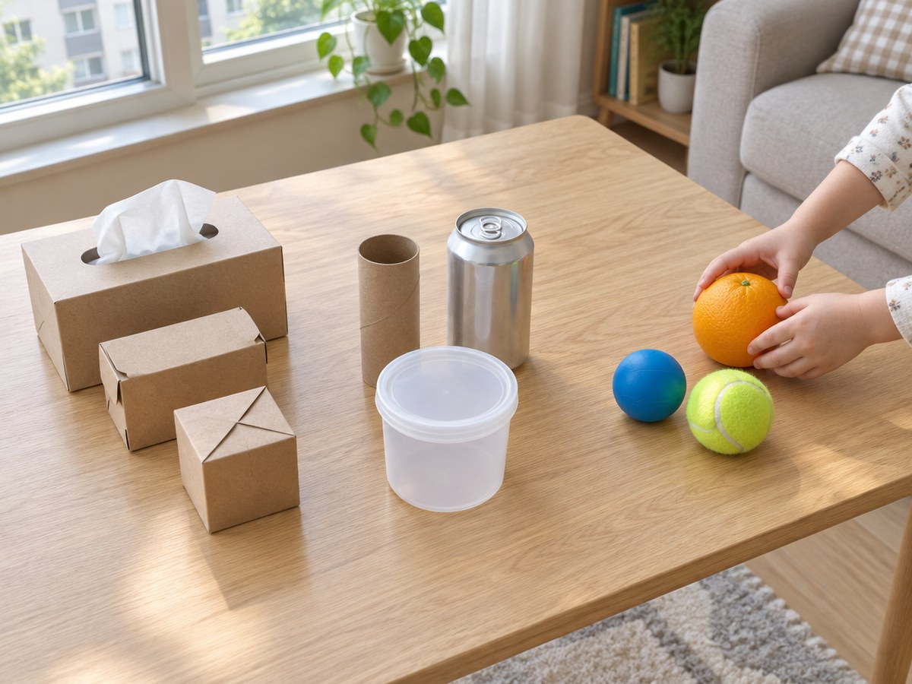

재활용품 모양 탐정

집에 있는 상자, 휴지심, 공을 모아 세 가지 모양으로 나눠요. 굴려 보고 쌓아 보며 모양마다 다른 점을 찾아요.
30분 · 난이도 ★☆☆ 쉬움
준비물
- 상자 모양 물건 2~3개 — 휴지 상자, 과자 상자, 작은 택배 상자
- 둥근기둥 모양 물건 2~3개 — 휴지심, 깨끗이 씻은 캔, 둥근 반찬통
- 공 모양 물건 2~3개 — 작은 공, 테니스공, 귤이나 오렌지
- 경사로 — 상자를 펼친 판이나 두꺼운 종이와 책 몇 권
- 모양 탐정 기록지 — 아래에서 내려받아 인쇄해요
하는 방법
- 단서 모으기
집 안을 돌며 상자처럼 생긴 것, 휴지심처럼 생긴 것, 공처럼 생긴 것을 2~3개씩 모아요. 탐정이 단서를 모으듯 장바구니에 담아 와요. - 세 무리로 나누기
기록지를 펴고 물건을 상자 모양, 둥근기둥 모양, 공 모양으로 나눠 놓아요. 귤은 어디로 갈까요? 동글동글한 공 모양이에요. - 굴려 보기
책 위에 판을 기대어 경사로를 만들고 물건을 하나씩 굴려요. 상자는 멈춰 있고, 눕힌 캔은 한쪽으로 굴러가고, 공은 이리저리 잘 굴러가요. - 쌓아 보기
같은 모양끼리 높이 쌓아 봐요. 상자는 높이 쌓을 수 있고, 둥근기둥은 세우면 쌓을 수 있어요. 공은 자꾸 굴러떨어져요. - 기록하고 맞히기
알아낸 것을 기록지에 O, X로 적어요. 마지막으로 눈을 감고 물건을 만져 보며 어떤 모양인지 맞혀요. "평평한 곳이 있어? 뾰족한 곳이 있어?"
생각해 봐요
- 둥근기둥 모양은 왜 눕히면 굴러가고, 세우면 굴러가지 않을까요?
- 공 모양을 쌓으려면 어떻게 하면 좋을까요?
- 우리 집에서 상자 모양이 가장 많은 곳은 어디일까요?
개념 정리
상자 모양은 평평한 면과 뾰족한 곳이 있어서 잘 쌓이지만 굴러가지 않아요. 둥근기둥 모양은 평평한 면과 둥근 면이 함께 있어서, 세우면 쌓을 수 있고 눕히면 굴러가요. 공 모양은 어느 쪽이나 둥글어서 어느 방향으로든 잘 굴러가요.